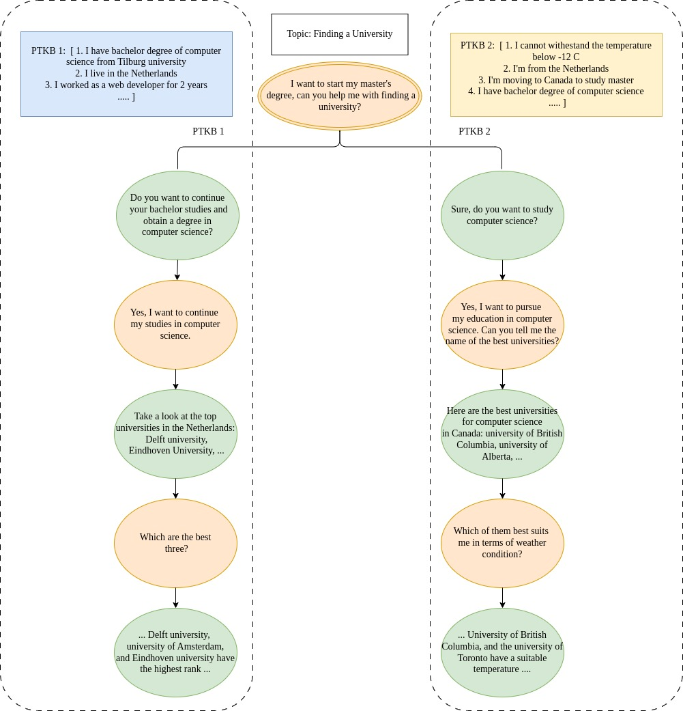
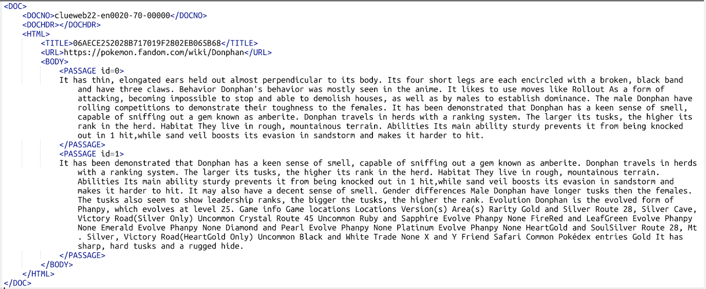

Guidelines for the task
The guidelines are also available as a Google Doc.
Participation
Participants must register to submit. To request a late registration, please email trec@nist.gov requesting a registration key. The dissemination form must be returned to submit runs.
Track Overview
In iKAT, the direction of the conversation can be changed in each turn based on:
-
The previous response from the user, and
-
The information learned from the user (background, perspective, and context).
The persona of the user and their information needs form the direction of the conversation. Each topic will have multiple conversations based on multiple personas and results in different outputs that demonstrates the personalized aspect of the conversations. To this aim, the persona and the information needs of the user are modeled by generating a Personal Textual Knowledge Base (PTKB) during the conversation.
Note: In the first year, the PTKB is provided for each conversation and the participants do not have to generate or update it.
Task Overview
In Year 1, the input at each conversation turn that is provided to the participants is the following:
-
Current user's information need
-
Conversation history
-
Personal Text Knowledge Base (PTKB).
We offer the following tasks:
-
Passage Ranking: Retrieve and rank relevant passages from the given collection in response to a user utterance.
-
Response Generation: For each turn, return a series of text responses. Each response may be simply a passage from the collection. Alternatively, it may also be an extracted or generated summary from one or more passage results. All responses must have at least one passage called "provenance" from the collection.
-
PTKB Statement Ranking: The relevant statements from PTKB are to be determined by the system in each turn. We approach this task as a relevance score prediction task. So, this output is in the form of a sorted list of the statements from PTKB with corresponding relevance score.
We plan on providing baseline ranking and response generation methods.
Submission Classes
There are two submission classes:
-
Automatic: No manually labeled data can be used for this run type. This means that the models should solely rely on the current utterance, and the converation context (i.e., previous user utterance and system’s canonical responses). Moreover, systems should not use the
ptkb_provenancefields from the current or previous turns. They should have a module to automatically identify the relevant PTKB statements (for an example, see theGetting Startedpart of the website). -
Manual: The manual runs can use the manually annotated data in the models. This includes the following:
- The manual rewritten utterance of the current utterance
- The ground-truth relevant PTKB statements (
ptkb_provenance) of the current utterance - The ground-truth relevant PTKB statements (
ptkb_provenance) of previous turns.
Note. In either run type, the participants are not allowed to use any information from the future. In other words, you should assume that for each turn, the only available information is up and including the current user utterance -- the system reponse of the current turn, as well as anything beyond that are hidden.
In the submission form, we will ask the pariticpants to mark which data sources they used in the manual submissions. You may either use some or all available lableled data, but this should be clearly specified in the run submission form.
Important Points Regarding Submissions
-
Title of the topic cannot be used.
-
All fields within the run, as shown in the sample on this website, are mandatory. You may choose not to submit a PTKB statement ranking; in this case, the
ptkb_provenancefield may be kept empty in the run; however, it must be present. -
The
passage_provenancefield can have up to 1000 passages -- less is ok but not more. -
Within the
passage_provenancelistin the run, eachdictshould have another field calledused. This new field will be abooleanfield indicating whether or not that passage was used to construct the response. If none of the passages have theusedfield set toTrue, then we will consider the top-5 passages as provenance for that response by default. -
Having a response
textfor every predicted response is mandatory. In case you are submitting a run that does not generate a response, you may leave this field empty or copy the top-1 passage as your response. -
The file
2023_top_1000_query_results.zipprovided on the "Data and Resources" page of this website is based on the manually rewritten queries. Teams may use them in their submission; however, please note that such submissions would be automaitcally considered asmanual.
Example Dialogue Tree
An example of two different conversations based on different personas for the same topic is shown in the following figure. For each user turn, systems should return a ranked list of text responses. Each response has one or more (ranked) source passages as provenance. In addition, the systems should provide a sorted list of relevant statements of PTKB with the corresponding relevance score.

For an explanation of the above diagram, see the Google Doc.
Primary Task Details
The main task in iKAT can be defined as personalized retrieval-based "candidate response retrieval" in context of the conversation. The task can be divided into the following sub-tasks:
-
Read the current dialogue turns up to the given turn (context). The provided context is: (1) A fixed set of previous responses with provenance in the preceding turns up to the current step, and (2) PTKB of the user. Note: Using information from following turns is not allowed.
-
Find the relevant statements from PTKB to the information needed for this turn. This task is considered as a relevance score prediction. The output is in the form of a sorted list of the statements from PTKB with corresponding relevance score.
-
Extract or generate a response. Each response can be generated from multiple passages. It can be an abstractive or extractive summary of the corresponding passages. Each response must have one or more ranked passages as provenance used to produce it.
What is a response?
-
A response is a text suitable for showing to the user. It should be fluent, satisfy their information needs, and not contain extraneous or redundant information.
-
A response is limited to a maximum of 250 words (as measured by the
Tokenizerfunction ofspacy.tokenizerin spaCy v3.3 library), but should vary depending on an appropriate query-response.
Passage (provenance) Ranking
-
A "run" takes the provenance passages for all responses in response order. The first 1000 provenances for each turn will be ranked.
-
Because a response may have multiple source passages, the score of passages in the provenance list for a response is used to order passages in descending order.
-
If a source passage occurs in multiple responses, it will be ranked by its first response.
-
Each provenance is written in the format doc_id:passage_id.
PTKB Statement (provenance) Ranking
-
A 'run' takes the provenance PTKB statements for all responses on which the system's response is based.
-
Because a response may consider multiple PTKB statements, the score of statements in the provenance list for a response is used to order statements in descending order.
-
Teams may decide to include non-relevant statements with very low scores or just remove them from the ranked list.
Collection
The text collection contains a subset of ClueWeb22-B documents, prepared by the organizers in collaboration with CMU. The goal is to retrieve passages from target open-domain text collections. Provenance must be provided from documents in the collection.
Passage Segmentation
For assessment, we will judge provenance passages. We segment the documents in our collection into passages in a similar manner as done by the TREC Deep Learning track for segmenting MS MARCO documents into passages: First, each document is trimmed to 10k characters. Then a 10-sentence sliding window with a 5-sentence stride is used to generate the passages.
An example document with some passage segmentation is provided in TrecWeb format below for illustration purposes:

Topic Format
We will provide several sample topics with example baseline runs for validation and testing. Below is a sample topics file with two subtrees of the same topic. Subtrees are identified by topic and subtree ID, i.e topic 1, subtree 2 is 1-2. Also a passage_provenance field with a list of provenance passages and ptkb_provenance field with a list of provenance statements from PTKB, that are used for generating the response, are included. An example is shown below for illustrative purposes.
[
{
"number": "1-1",
"title": "Finding a university",
"ptkb": {
"1": "I graduated from Tilburg university.",
"2": "I live in the Netherlands.",
"3": "I'm allergic to peanuts.",
"4": "I worked as a web developer for 2 years.",
"5": "I have a bachelor's degree in computer science.",
"6": "I like Indian food.",
"7": "My bachelor's GPA is 5.6.",
"8": "I'm 26 years old.",
"9": "My TOEFL SCORE is 91.",
"10": "My interesting bachelor courses are data structure, algorithm, data mining, and artificial intelligence.",
"11": "I didn't like computer architecture and logical circuits courses."
},
"turns": [
{
"turn_id": 1,
"utterance": "I want to start my master's degree, can you help me with finding a university?",
"resolved_utterance": "I want to start my master's degree, can you help me with finding a university?",
"response": "Do you want to continue your bachelor's studies and obtain a degree in computer science?",
"ptkb_provenance": [
5
],
"response_provenance": []
},
{
"turn_id": 2,
"utterance": "Yes, I want to continue my studies in computer science.",
"resolved_utterance": "Yes, I want to continue my studies in computer science.",
"response": "Do you want to study in the Netherlands, Europe, or somewhere further away?",
"ptkb_provenance": [
2
],
"response_provenance": []
},
{
"turn_id": 3,
"utterance": "I'd like to stay here.",
"resolved_utterance": "I'd like to stay in the Netherlands.",
"response": "I can help you with finding a university for continuing your studies in the Netherlands as a computer science student. Take a look at these Top Computer Science Universities in the Netherlands: Delft University of Technology, Eindhoven University of Technology, Vrije Universiteit Amsterdam, University of Amsterdam, Leiden University, Radboud University, Utrecht University, University of Twente",
"ptkb_provenance": [
5,
2
],
"response_provenance": [
"clueweb22-en0034-09-03452:1"
]
},
}
{
"number": "1-2",
"title": "Finding a university",
"ptkb": {
"1": "I don't like crazy cold weather.",
"2": "I don't have a driver's license.",
"3": "I plan to move to Canada.",
"4": "I'm from the Netherlands.",
"5": "I'm used to heavy rains in the Netherlands.",
"6": "I graduated from UvA.",
"7": "I have bachelor's degree in computer science.",
"8": "I speak English fluently."
},
"turns": [
{
"turn_id": 1,
"utterance": "I want to start my master's degree, can you help me with finding a university?",
"resolved_utterance": "I want to start my master's degree, can you help me with finding a university in Canada?",
"response": "Sure, do you want to study computer science?",
"ptkb_provenance": [
7,
3
],
"response_provenance": []
},
{
"turn_id": 2,
"utterance": "Yes, I want to pursue the same major. Can you tell me the name of the best universities?",
"resolved_utterance": "Yes, I want to pursue computer science. Can you tell me the name of the best computer science universities in Canada?",
"response": "Here are the top universities for computer science in Canada: 1) University of British Columbia, 2) University of Alberta, 3)Concordia University, 4) Simon Fraser University, 5)The University of Toronto",
"ptkb_provenance": [],
"response_provenance": [
"clueweb22-en0026-31-15538:1",
"clueweb22-en0026-31-15538:4",
"clueweb22-en0026-31-15538:6",
"clueweb22-en0040-41-06056:0"
]
},
{
"turn_id": 3,
"utterance": "Which of them best suits me in terms of weather conditions?",
"resolved_utterance": "Which of the following universities best suits me in terms of weather conditions? 1) the University of British Columbia, 2) the University of Alberta, 3)Concordia University, 4) Simon Fraser University, and 5)The University of Toronto.",
"response": "I know you don't like very cold weather, but can you give me an estimation of the temperature that is acceptable for you?",
"ptkb_provenance": [
1,
5
],
"response_provenance": []
},
}
]
Task Submissions
Participants submit the output of their system on the specified “test” topics. A single participant may submit the output of multiple systems, up to a maximum of four runs. A sample run is provided below:
{
"run_name": "sample_run",
"run_type": "automatic",
"turns": [
{
"turn_id": "1-2_3",
"responses": [
{
"rank": 1,
"text": "The University of British columbia in Vancouver has temperatures near 80 degrees Fahrenheit (27 degrees Celsius) in summer and up to 45 degrees Fahrenheit (about
degrees Celsius) in winter which is suitable for you. The university of Toronto is acceptable since has cold winters, average temperatures can drop below -10 ° C but not below 12 degrees for long. The Concordia university in Montreal is not suitable for you since in the winter, could reach minus 40 with the wind chill. University of Alberta is also not suitable for you. In winter the average temperature varies between -6.5°C (20.3°F) and -13.5°C (7.7°F). Simon Fraser university is not acceptable for you. The city which the university is located in will reach temperatures of -14 in the winter.",
"ptkb_provenance": [
{
"id": "1",
"text": "I cannot withstand the temperature below -12 for long time",
"score": 0.9
},
{
"id": "2",
"text": "I’m used to heavy rains in the Netherlands",
"score": 0.8
}
],
"passage_provenance": [
{
"id": "clueweb22-en0000-94-02275:0",
"text": "...",
"score": 0.6,
"used": true,
},
{
"id": "clueweb22-en0027-06-08704:1",
"text": "...",
"score": 0.5,
"used": true,
},
{
"id": "clueweb22-en0005-63-12144:0",
"text": "...",
"score": 0.4,
"used": true,
},
{
"id": "clueweb22-en0013-01-17558:1",
"text": "...",
"score": 0.38,
"used" : false,
},
{
"id": "clueweb22-en0014-39-04143:0",
"text": "...",
"score": 0.3,
"used": false
}
]
}
]
}
]
}
- The run_name is a run submission identifier that should be descriptive and unique to your team and institution.
- The run_type is one of the two types listed above, automatic and manual.
- Each turn in the turns list should contain a turn_identifier, consisting of the topic_id-subtree_id and turn_id concatenated with an underscore, e.g.
1-2_3for topic 1, subtree 2, turn 3. - Each turn should also contain a list of responses. A response consists of text and a provenance list. Each provenance should have an id, text, and score.
- Each turn includes a sorted list of statements from PTKB based on the relevance score of each statement from PTKB to the current turn.
For provenance ranking, this will be converted to a traditional TREC run format:
31_1-1 Q0 clueweb22-en0000-94-02275:0 1 0.5 sample_run
Runs may include up to 1000 responses for each user turn. For provenance ranking, only the first 1000 pieces of unique provenance will be used. As in previous years of CAsT, only a limited top-K responses and provenances will be assessed according to resource constraints.
Evaluation
We will use the relevance assessment methods used in previous years of CAsT for relevance to individual turns.
- Provenance Passage Assessment: The provenance passages that are used to produce the responses will be pooled and assessed. The relevance scale will be the same as previous years of CAsT, see the previous overview papers for details. The standard ranking metrics such as P@k, NDCG@k, and MAP will be calculated using the judgments. We will focus on the earlier positions (1, 3, 5).
- Response Assessment: A response may be a simple passage or a summary of one or more passages in providing a response. We will assess the top ranked response (or top-k) from all systems for all turns. Only responses with at least one relevant provenance passage will be judged. Responses will be assessed for relevance and conciseness. The responses and judgments on them will be released with the judgments.
- Extracted Relevant Statements Assessment: The standard metrics like Precision, Recall, P@k, and MAP will be used for evaluating the sorted list of relevant statements from PTKB.
Similar to CAsT year 4, only a subset of turns may be evaluated for provenance ranking effectiveness. This will be disclosed to participants after assessment is completed.
Timeline
| Task | Date |
|---|---|
| Guidelines released | April 2023 |
| Test topics released | June 2023 |
| Submission deadline | August 31, 2023 |
| Results released to participants | October 2023 |